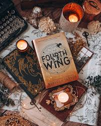

My love for fantasy novels started when I first read the Harry Potter series. The world-building, the magic, and the unforgettable characters left a lasting impact on me. Since then, I’ve read countless other fantasy series, each one taking me on a new adventure. Right now, I'm deeply engrossed in "Fourth Wing," a story full of dragons, magic, and heart-pounding action. Fantasy novels are more than just stories—they’re an escape to worlds full of wonder and excitement!
